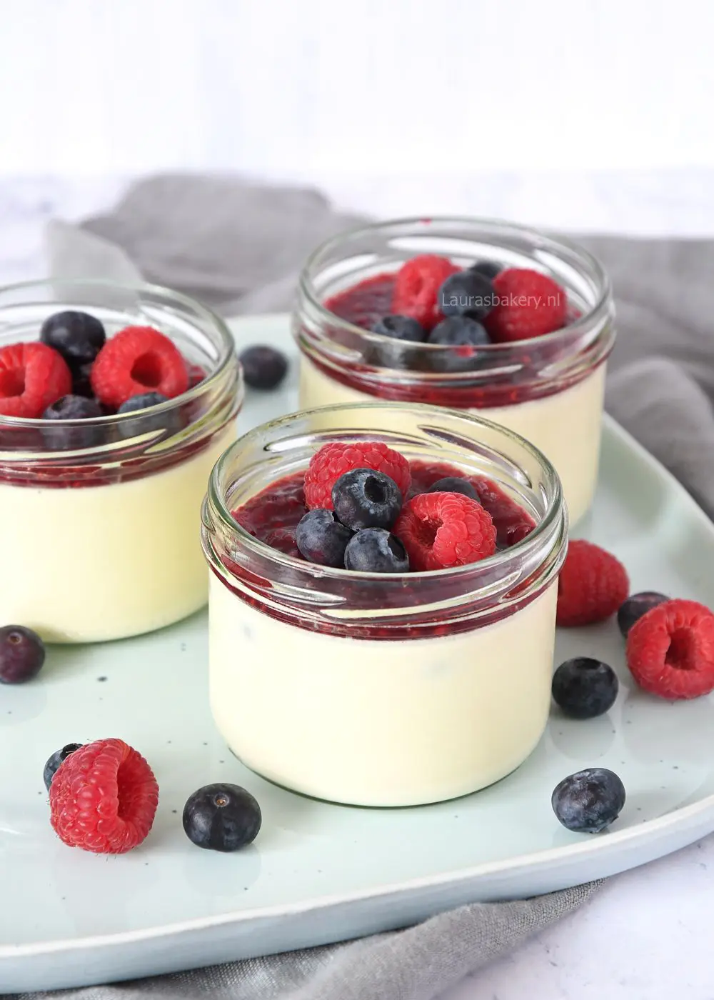

Beschrijving
Een heerlijk én ontzettend makkelijk toetje waar geen oven aan te pas komt: rood fruit panna cotta.
Ingredienten
- Vanille panna cotta
-
- 4 blaadjes gelatine
- 500 ml slagroom
- 2 tl vanille-extract
- 50 gram fijne kristalsuiker
- Rood fruit compote
-
- 200 gram rood fruit
- 4 el water
- 2 el suiker
- Decoratie
-
Instructies
- Vanille panna cotta
-
- Week de blaadjes gelatine in koud water voor ongeveer 5 minuten
- Verwarm de slagroom in een pannetje en voeg vanille-extract en suiker toe en roer door tot deze is opgelost
- Zodra het begint te koken haal je het pannetje van het vuur
- Knijp de gelatineblaadjes uit en voeg toe aan het melkmengsel, roer door tot deze zijn opgelost
- Verdeel de slagroom over de schaaltjes en zet ze minimaal 3 uur in de koelkast
- Rood fruit compote
-
- Doe 200 gram fruit, water en suiker in een pannetje. Verhit op een laag vuur en roer regelmatig door. Prak of pureer het fruit desgewenst fijn en laat een paar minuten pruttelen in de pan.
- Laat de compote volledig afkoelen voordat je deze op de panna cotta schept.
- Serveer de panna cotta met je zelfgemaakte compote en de rest van het overgebleven fruit.